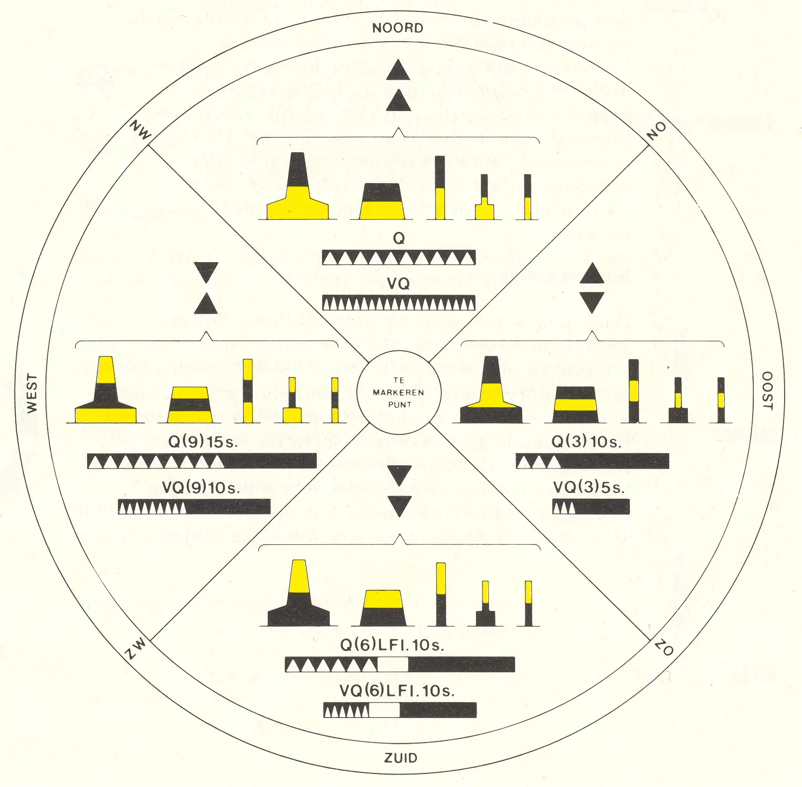
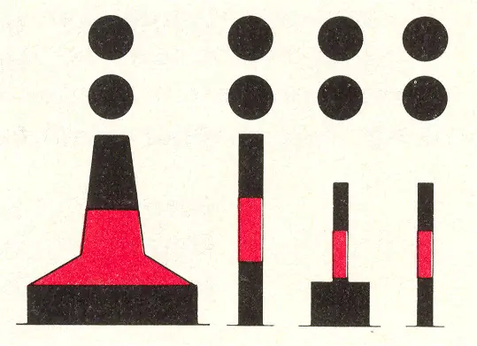
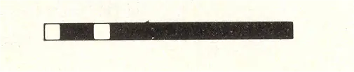
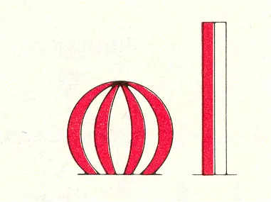
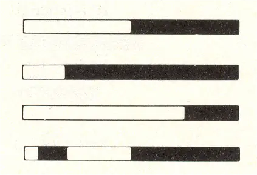

6 MARKERING OP BREDE VAARWATERS EN MEREN
Op brede vaarwaters en meren kunnen ook de volgende markeringen worden toegepast.
6.1. Cardinale markering
Deze markering wordt gebruikt in samenhang met het kompas en geeft aan waar zich, ten opzichte van een gevaar, bevaarbaar water bevindt. De markeringen worden genoemd naar het kwadrant waarin ze liggen; deze benaming duidt tevens de zijde aan waarlangs de markering moet worden gepasseerd. De kwadranten liggen tussen de volgende peilingslijnen, gezien vanuit het te markeren punt:
Noord kwadrant: tussen NW en NO,
Oost kwadrant: tussen NO en ZO,
Zuid kwadrant: tussen ZO en ZW,
West kwadrant : tussen ZW en NW.
De belangrijkste kenmerken van de cardinale markering zijn het topteken, altijd bestaande uit twee kegels, en het licht, bestaande uit een (groep-) flikkerlicht (Q) of snelflikkerlicht (VQ).

6.1.1. Noord Cardinaal betonningsvoorwerp
vorm: | pilaar, ton, sparboei, drijf- of kopbaken |
kleur: | zwart boven geel |
topteken: | 2 boven elkaar geplaatste zwarte kegels met de toppen naar boven gericht |
licht:1 | - kleur: wit |
- karakter: VQ of Q | |
kenteken: | de naam - of een afkorting daarvan - van het gemarkeerde gevaar |
1 indien aanwezig
6.1.2. Oost Cardinaal betonningsvoorwerp
vorm: | pilaar, ton, sparboei, drijf- of kopbaken |
kleur: | zwart met één brede gele horizontale band |
topteken: | 2 boven elkaar geplaatste zwarte kegels met de basis naar elkaar toe gericht |
licht:1 | - kleur: wit |
- karakter: VQ (3) 5 s. of Q (3) 10 s. | |
kenteken: | e naam - of een afkorting daarvan - van het gemarkeerde gevaar |
1 indien aanwezig
6.1.3. Zuid Cardinaal betonningsvoorwerp
vorm: | pilaar, ton, sparboei, drijf- of kopbaken |
kleur: | geel boven zwart |
topteken: | 2 boven elkaar geplaatste zwarte kegels met de toppen naar beneden gericht |
licht:1 | - kleur: wit |
karakter: VQ (6) + LFl 10 s. of Q (6) + LFl 15 s. | |
kenteken: | de naam - of een afkorting daarvan - van het gemarkeerde gevaar |
1 indien aanwezig
6.1.4. West Cardinaal betonningsvoorwerp
vorm: | pilaar, ton, sparboei, drijf- of kopbaken |
kleur: | geel met één brede zwarte horizontale ban |
topteken: | 2 boven elkaar geplaatste zwarte kegels met de toppen naar elkaar toe gericht |
licht:1 | - kleur: wit |
- karakter: VQ (9) 10 s. of Q (9) 15 s. | |
kenteken: | de naam - of een afkorting daarvan - van het gemarkeerde gevaar |
1 indien aanwezig
6.2. Markering van een afzonderlijk gevaar
Deze markering geeft losliggende gevaren aan die beperkt van afmeting zijn en die - op voldoende afstand - rondom passeerbaar zijn. Evenals bij de cardinale markering zijn de belangrijkste kenmerken het topteken, altijd bestaande uit 2 bollen, en het licht, bestaande uit 2 schitteringen.
vorm: | pilaar of sparboei, eventueel drijf- of kopbaken |  |
kleur: | zwart met een brede rode horizontale band | |
topteken: | 2 boven elkaar geplaatste zwarte bollen | |
licht:1 | - kleur: wit |  |
- karakter: Fl (2) | ||
kenteken: | de naam - of een afkorting daarvan - van het gemarkeerde gevaar | b.v. boorpijp |
1 indien aanwezig
6.3. Markering van veilig vaarwater
Deze markering geeft een positie aan waar rondom veilig genavigeerd kan worden. Zij wordt gebruikt om het midden of het diepste gedeelte van een vaarwater, of een aanloop of verkenningspositie aan te geven. Deze betonning wordt in het BPR-gebied zonder topteken toegepast, ter onderscheiding van de scheidingsmarkering (2.1.3).
vorm: | bolvormige boei of ton eventueel sparboei |  |
kleur: | rood-wit verticaal gestreept | |
licht:1 | - kleur: wit |  |
- karakter: langzaam, b.v. Iso (6 of 8 s.), LFl, Oc, Mo (Morsecode) A | ||
kenteken: | de naam - of een afkorting daarvan - van het vaarwater, de aanloop- of verkenningspositie, eventueel opeenvolgend genummerd | b.v. Oosterschelde |